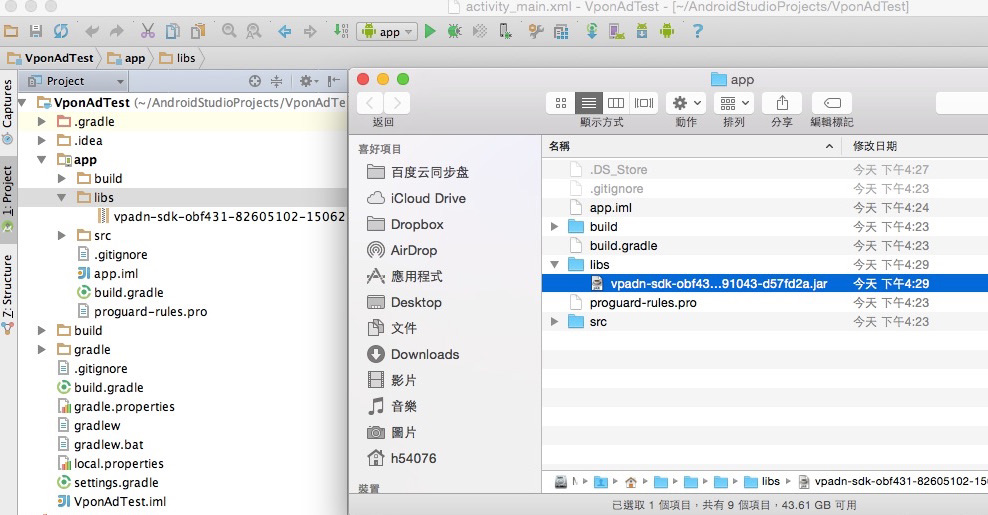
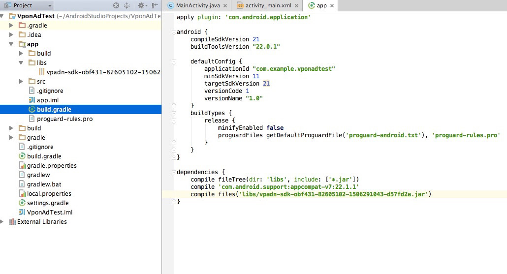

VPON SDK 4 Fundamental
若您曾使用過舊版SDK，請先閱讀: 升級最新 SDK 所需修改
請先從註冊網址檢查您的 Ad Network 平台:
Taiwan 平台為 http://tw.pub.vpon.com/
China 平台為 http://cn.pub.vpon.com/如果您申請的是 Taiwan 的平台，請使用：
vponBanner = new VpadnBanner(this, bannerId, VpadnAdSize.SMART_BANNER, “TW”);如果您申請的是 China 的平台，請使用：
vponBanner = new VpadnBanner(this, bannerId, VpadnAdSize.SMART_BANNER, “CN”);
Overview
VPON 橫幅廣告 (banner) 利用畫面的一小部分來吸引使用者點擊，即可打開全螢幕享受更豐富的瀏覽體驗，例如網站或應用程式商店網頁。 若要在 Android 應用程式中顯示橫幅廣告，只要在您的 Android Studio 專案中導入 SDK，然後在使用者介面上加入 com.vpadn.ads.VpadnBanner 即可。
Requirement
VPON 廣告 Android 版的 SDK 需至少搭配 Android 2.1.X 或更新版本使用。請確認您所使用的是最新版的 Android SDK，並依據 Android v4.X 或更新版本進行編譯 (將 default.properties 中的 target 設為 android-17)。
導入 SDK
要在應用程式中加入 VPON 廣告，您必須完成三個步驟：
- 在 Android Studio 專案中加入 VPON SDK 4 JAR
- 在 AndroidManifest.xml 中宣告 com.vpadn.widget.VpadnActivity
- 在資訊清單中設定必要的 permissions。
導入 SDK JAR
在 Android 中的應用程式專案找到 libs

滑鼠右鍵點選 [libs] 後，左鍵點選 [Reveal in Finder] 
將下載下來的 JAR 檔複製到 [libs] 資料夾 (也可以直接拖移 Vpon JAR 至專案的 [libs])

回到 Android 專案，[libs] 會多出一個 Vpon 的 JAR 檔案，對它按下右鍵選則 [Add as library]。也請到 app 下的 build.gradle 確認，如範例顯示，將會有一行 compile files('libs/vpon_SDK_version_name.jar') 表示 JAR 被讀到了 
VpadnActivity
加入以下設定在您的 AndroidManifest.xml
<activity
android:name="com.vpadn.widget.VpadnActivity"
android:configChanges="orientation|keyboardHidden|navigation|keyboard|screenLayout|uiMode|screenSize|smallestScreenSize"
android:theme="@android:style/Theme.Translucent"
android:hardwareAccelerated="true" >
</activity>
注意: 上面每一個屬性都不能少,其值都需要相同！
Permissions
加入以下 permission 在您的 AndroidManifest.xml
<uses-permission android:name="android.permission.INTERNET" />
<uses-permission android:name="android.permission.READ_PHONE_STATE"/>
<uses-permission android:name="android.permission.ACCESS_COARSE_LOCATION"/>
<uses-permission android:name="android.permission.WRITE_EXTERNAL_STORAGE" />
<uses-permission android:name="android.permission.ACCESS_WIFI_STATE" />
<uses-permission android:name="android.permission.ACCESS_NETWORK_STATE"/>
上面六個是必要的 permission，另外建議您可以開啟下面這個 permission，將可以更精準的定位取得地理位置相關的廣告
<uses-permission android:name="android.permission.ACCESS_FINE_LOCATION"/>
另外下面這個permission可以提高辨識使用者身分的能力，讓廣告能更精準的被投放，進而為您帶入更多的營收
<uses-permission android:name="android.permission.GET_ACCOUNTS"/>
由於Vpon SDK 4有大量的 Video 廣告，建議您在你放 Banner 的 Activity 內加入硬體加速，如下
<activity
android:name="com.vpadn.example.MainActivity"
android:label="@string/app_name"
android:configChanges="keyboardHidden|orientation"
android:hardwareAccelerated="true" >
<intent-filter>
<action android:name="android.intent.action.MAIN" />
<category android:name="android.intent.category.LAUNCHER" />
</intent-filter>
</activity>
撰寫 Banner
Android 應用程式由 View 物件所組成，也就是以文字區域和按鈕等控制項的形式向使用者呈現的 Java 執行個體。VpadnBanner 只是另一種 View 子類別，用來顯示由使用者點擊觸發的小型 HTML5 廣告。 和所有的 View 一樣，AdView 可以單用程式碼撰寫，也可以絕大部分用 XML 寫成。 加入橫幅廣告會用到程式碼：
- 匯入 com.vpadn.ads.*
- 宣告 VpadnBanner 執行個體
- 建立例項，指定BannerId，也就是Vpon申請的BannerId
- 將該檢視加進使用者介面
- 透過廣告載入例項
最簡易的方式是在應用程式的 Activity 內進行上述所有步驟。
import com.vpadn.ads.*
public class MainActivity extends Activity {
private RelativeLayout adBannerLayout;
private VpadnBanner vponBanner = null;
//TODO: VPON Banner ID
private String bannerId = CHANGE ME ;
@Override
protected void onCreate(Bundle savedInstanceState) {
super.onCreate(savedInstanceState);
setContentView(R.layout.activity_main);
//get your layout view for Vpon banner
adBannerLayout = (RelativeLayout) findViewById(R.id.adLayout);
//create VpadnBanner instance
vponBanner = new VpadnBanner(this, bannerId, VpadnAdSize.SMART_BANNER, "TW");
VpadnAdRequest adRequest = new VpadnAdRequest();
//set auto refresh to get banner
adRequest.setEnableAutoRefresh(true);
//load vpon banner
vponBanner.loadAd(adRequest);
//add vpon banner to your layout view
adBannerLayout.addView(vponBanner);
}
@Override
protected void onDestroy() {
super.onDestroy();
if (vponBanner != null) {
//remember to call destroy method
vponBanner.destroy();
vponBanner = null;
}
}
}
使用 layout xml 設定 banner
也可以直接使用xml 定義Banner 這樣你就不需要寫任何java code
<LinearLayout xmlns:android="http://schemas.android.com/apk/res/android"
xmlns:vpadn="http://schemas.android.com/apk/lib/com.vpadn.ads"
android:id="@+id/mainLayout"
android:layout_width="fill_parent"
android:layout_height="fill_parent"
android:orientation="vertical" >
<RelativeLayout
android:id="@+id/adLayout"
android:layout_width="fill_parent"
android:layout_height="wrap_content" >
<com.vpadn.ads.VpadnBanner
android:id="@+id/vpadnBannerXML"
android:layout_width="wrap_content"
android:layout_height="wrap_content"
vpadn:adSize="SMART_BANNER"
vpadn:autoFresh="true"
vpadn:bannerId= CHANGE_ME
vpadn:loadAdOnCreate="true"
vpadn:platform="TW" />
</RelativeLayout>
</LinearLayout>
記得將上面的 vpon:bannerId 填入你真實的 banner ID
如果你的 banner ID 還未經過審核可以使用下列的方式取得測試廣告
VpadnAdRequest adRequest = new VpadnAdRequest();
HashSet<String> testDeviceImeiSet = new HashSet<String>();
testDeviceImeiSet.add("your device advertising id");
//TODO: put Android device advertising id
adRequest.setTestDevices(testDeviceImeiSet);
vponBanner.loadAd(adRequest);
可以使用下列方式取得 device 上的 Advertising ID
- 從 eclipse 上的 log 搜尋"advertising_id"
- 直接操作手機: 設定 --> Google --> 廣告 --> 您的廣告 ID (Advertising ID)
其他訣竅
請參閱中階使用中更多的橫幅廣告簡介。
下載 Sample code
結果
現在只要執行這個應用程式，您應該就會在畫面上方看到橫幅廣告：